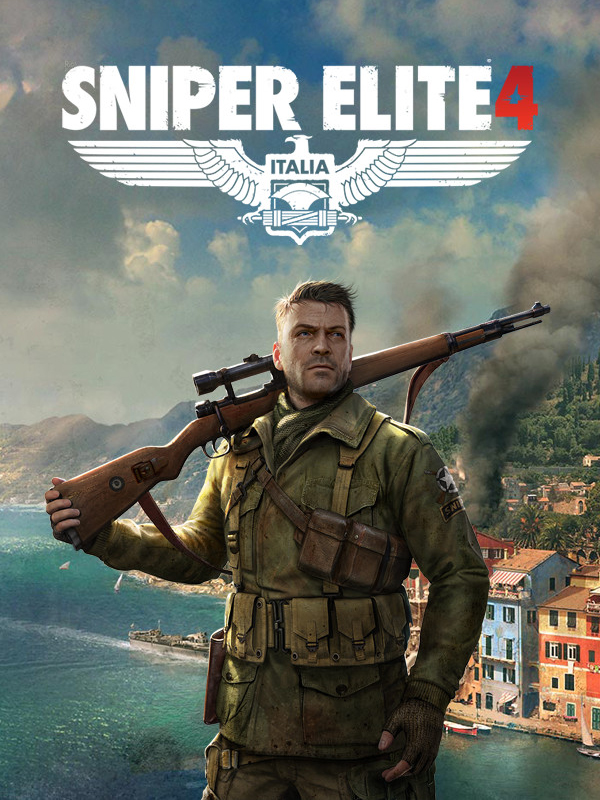

Sniper Elite 4
Sniper Elite 4
Details
|  | |
| Spielzeit | 17h 46m 0s |
| Letzte Aktivität | 16.11.2020 23:16:37 |
| Hinzugefügt | 20.10.2020 |
| Modifiziert | 12.12.2022 0:57:59 |
| Fertigstellungsstatus | Abgeschlossen |
| Bibliothek | Steam |
| Quelle | Steam |
| Plattform | PC (Windows) |
| Veröffentlichungsdatum | 13.02.2017 |
| Community Bewertungen | 70 |
| Kritiker Punkte | 78 |
| Benutzerwertung | |
| Genre | Action Adventure |
| Entwickler | Rebellion |
| Verleger | Rebellion |
| Eigenschaft | Achievements Cloud Saves Controller Support Co-op Multiplayer Ranglisten Single Player Steam Karten |
| Links | Communityhub Diskussionen Neuigkeiten Shopseite PCGamingWiki Errungenschaften |
| Tag | Action Adventure Co-Op First-Person FPS Gore Mature Multiplayer Open World Shooter Single Player Sniper Stealth Strategy Tactical Third Person Third-Person Shooter Violent War World War II |
Beschreibung
- "Sniper Elite 4 is a smart, strategic shooter that empowers you to make your own path"
IGN, 8.3/10
- "A riotously entertaining WW2 stealth adventure"
Eurogamer, Recommended
- "An ambitious stealth game that handily outperforms its predecessors"
PC World, 4/5
Discover unrivalled sniping freedom in the largest and most advanced World War 2 shooter ever built. Experience tactical third-person combat, gameplay choice and epic longshots across gigantic levels as you liberate wartime Italy from the grip of Fascism.
Set in the aftermath of its award-winning predecessor, Sniper Elite 4 transports players across the beautiful Italian peninsula, from sun-drenched Mediterranean coastal towns, to ancient forests, mountain valleys and colossal Nazi megastructures.
Covert agent and elite marksman Karl Fairburne must fight alongside the brave men and women of the Italian Resistance and defeat a terrifying new threat with the potential to halt the Allied fightback in Europe before it’s even begun.